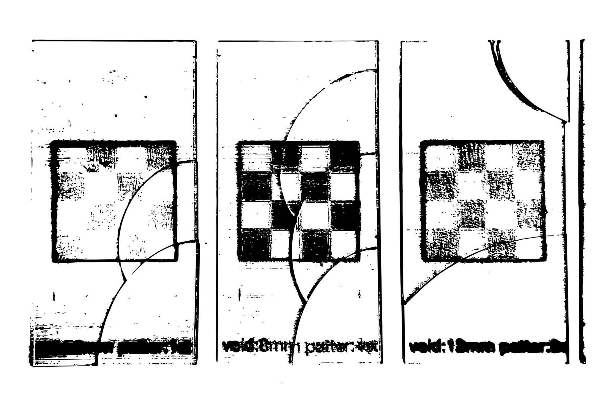
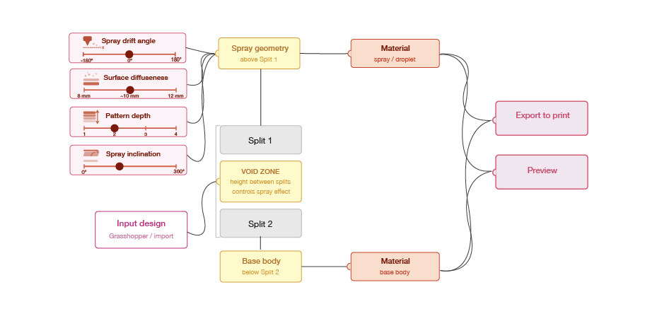

Material jetting deposits photopolymer voxel by voxel; a missing layer would normally be a failure. This research treats that failure as a design variable, encoding void height and orientation parametrically built in a Grasshopper script. The grasshopper script is exported to a bitmap stack and sent to a Stratasys J-series printer. Material leads, the script follows.

Spray density, opacity, gradient, and particle movement — tested and evaluated through print series, consolidated into a single node: a proposed design space for creating this spray-like effect in voxel printing.
Method
Experimental Fabrication: Three print series were produced (Figure 4) to isolate void height, pattern depth, and inclination as independent variables.
Structural Investigation: Surface character, from ordered to diffuse, spray-like is compared across void height, pattern depth, and inclination.
Design Contribution: Findings from the print series were translated directly into parametric surface-finish controls within the Voxolotl workflow.
Findings
A void height of 8 mm produced sharper pattern boundaries while 12 mm caused greater droplet drift and a more diffuse surface, establishing ~10 mm as a central value and void height as the primary diffuseness control. Pattern depths of 1–4 mm all produced visible diffuseness, with 2 layers yielding the strongest spray effect, confirming pattern depth around 2 as a key strength parameter. Inclining the void layer introduced a spatial gradient in spray intensity across the print, making inclination an effective tool for modulating directional diffusion.
Printhead motion was found to amplify droplet drift and is therefore proposed as a spray drift angle slider within the tool, enabling designers to account for and exploit print-direction effects in the resulting surface texture.
All four parameters can therefore be encoded as controllable sliders within the Grasshopper workflow, creating a design space for adjustable spray-like surface effects (Figure 2).

Supervised by TU Delft Computational Fabrication. Building on the bitmap workflow of Doubrovski et al. (2015).